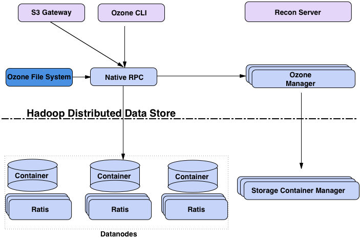
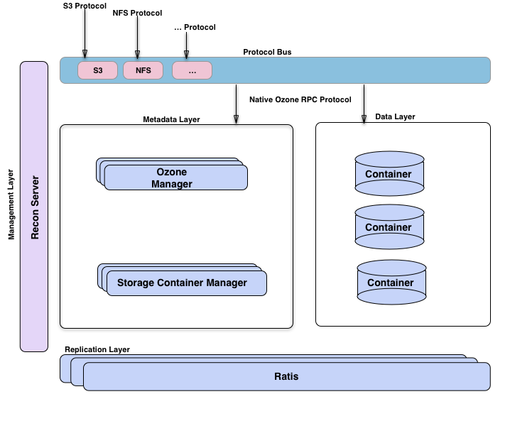
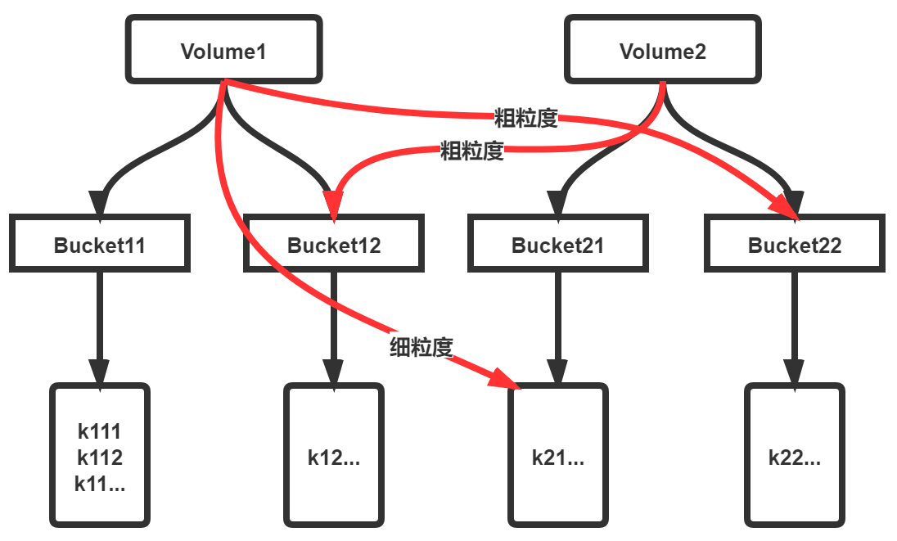

主要研究目标：
- 独立Ozone集群部署：特性、功能、安全
- Ozone with HDFS部署：特性、功能、安全
当前各种开源的对象存储组件，基本上是对标Amazon的S3。在特性、功能上面，基本上都支持S3服务的访问。毕竟当前Amazon的S3在对象存储领域，具有广泛的影响力。各类公司在上云时，也会基于S3进行基准测试，对比各家云厂商的对象存储服务能力，从而考虑上云的性价比。
上云时需要考虑的一个点是本地机房与云商对象存储的一体化访问能力。而Apache Ozone具有原生优势
- Hadoop项目中分离而来：为解决HDFS自身缺陷而生
- 原生支持HDFS协议，以及安全机制(Kerberos+Token)
- 支持S3协议。大部分对象存储服务都兼容S3协议
- 原生支持云服务：Yarn、Kubernetes
- 可伸缩、可扩展、强一致性
当前Apache Ozone具有的不足之处，可能有几点
- 尚未完全成熟：虽然已从Apache毕业，成为顶级项目，但尚未发型稳定版。当前各种主流的版本，都处理alpha、beta版，且版本号基本上处于0.X版
- 存在性能与稳定性瓶颈：当前Apache Ozone的已知版本中，在稳定性、性能访问还存在一定的瓶颈。特别是随着Ozone规模增长到一定程度之后，写入方面会存在较为严重的瓶颈。
虽然Apache Ozone尚未经过大规模集群的验证，但这并不妨碍我们进行调研测试，毕竟未来云原生的对象存储可能会成为趋势。
1. Ozone架构
本小结我们先引入Ozone的架构图，然后分别介绍各个组件的功能，以及Ozone的基本概念。
1.1. 架构图
这里的架构图主要是引用hadoop-ozone官方文档介绍的结构图，主要有两个：Block管理角度、功能分层角度。
1.1.1. Block管理角度

Block角度主要包括几大组件
- Ozone Manager(OM)：om在hadoop-ozone中具有命名空间管理的职能。
- Storage Container Manager(SCM)：管理物理数据与数据层
- Recon：接口管理
在Ozone的Road Map中介绍，当前已经实现了针对SCM的HA架构，后期版本中逐渐实现对OM的HA架构，从而实现整体的HA架构部署。
1.1.2. 功能分级角度

从功能上来看，hadoop-ozone主要分为
- Data Layer：数据存储层
- Metadata Layer：元数据管理层
- Repication Lay：数据复制与一致性管理
- Protocol Bus：数据扩展访问
- Recon Server：与Ozone的所有组件通信，提供统一的API
1.1.3. 基本概念
初识Apache Ozone的架构之后，我们需要了解涉及到的几个关键概念。主要涉及到对象存储相关的基本概念：卷、桶、Key。
- 卷：Volume。卷的概念类似账户，只有管理员工可以创建删除
- 桶：Bucket。桶的概念类似目录，桶可以包含任意数量的Key，但不能不含其它桶
- Key：Key类似与文件的概念。
感觉官方文档的概念介绍，基本可以理解为：
其中粗粒度、细粒度可以理解为权限访问。且在对象存储模型中，没有目录的概念只有Key的概念，Key指向的就是具体的存储对象。
1.2. 亮点特性
1.2.1. 安全机制
认证体系
1.2.2. 单独的
2. 部署测试
2.1. 源码编译
2.1.1. 下载源码
2.1.2. 编译问题
2.2. 部署Ozone独立集群
3. 总结
4. 参考文献
本博客所有文章除特别声明外，均采用 CC BY-SA 4.0 协议 ，转载请注明出处！